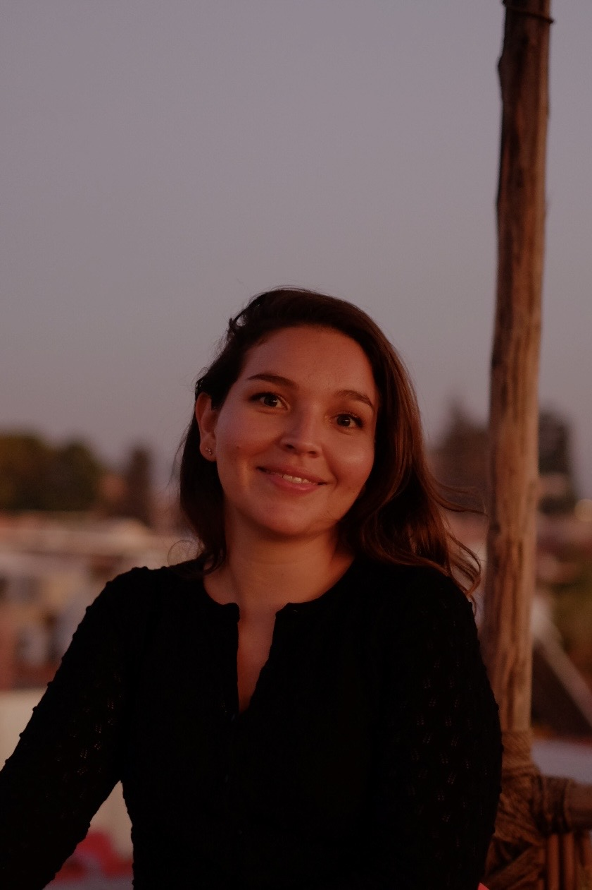

Research Associate, UNU-WIDER · Helsinki, Finland
I work at the intersection of political economy, conflict, and development. My research engages broader comparative questions about organised violence, state-building, development, and the conditions under which conflict-affected communities rebuild. Specifically, my work focuses on how armed conflict shapes economic and political life, perceptions of state authority, and social trust — and what this means for recovery, governance, and the localised persistence of violence when states transition towards peace.
My work spans different regional contexts across Sub-Saharan Africa and Latin America, with qualitative research conducted in Peru, Mozambique, and Iraq, and integrates different methods and forms of evidence, including data collected in the field, remote sensing and administrative data, and the use of strategies for causal inference and spatial econometrics.
Alongside my academic research, I engage with policy audiences to promote improved ways to assess fragility, the impacts of conflict, and map out approaches for post-conflict recovery, in collaboration with partners such as the World Bank, IFPRI, and other UN agencies.
I hold a PhD in Political Science from the University of Essex and a Master's in Peace and Conflict Studies from Uppsala University. Before joining UNU-WIDER, I was a Postdoctoral Research Associate at the University of Arizona. I am a Fellow of PRIO's Research School on Peace and Conflict.
Born in Bolivia and raised in Germany, I can feel at home in many places — as long as there is great food and nice people. I enjoy cooking and baking, reading fiction, traveling, and playing tennis.